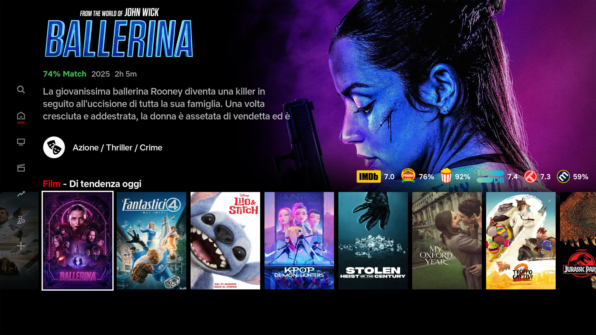

ballerina.backups
Tutto quello che si trova qui sono alcuni backup fatti da me, nell'applicazione open source Kodi e che sono per mio uso esclusivo e personale. Non sono responsabile dell'uso improprio che può essere generato, in relazione alla pirateria, alla violazione del copyright e ad altre cose che possono essere generate a scapito delle grandi piattaforme di streaming o della televisione a pagamento. Lo scopo di questo repo è solo per uso personale e proprio insegnamento.
B4L3R1N4.zip
